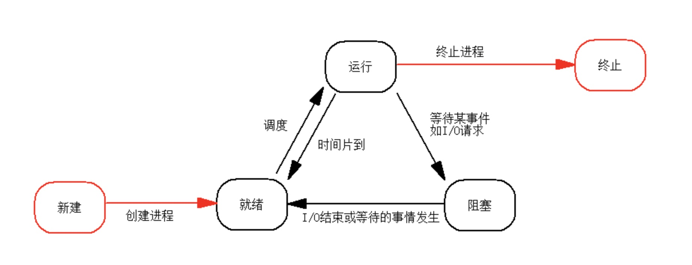
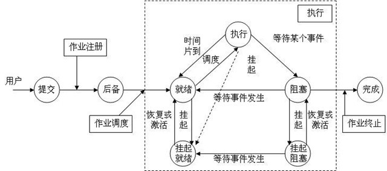
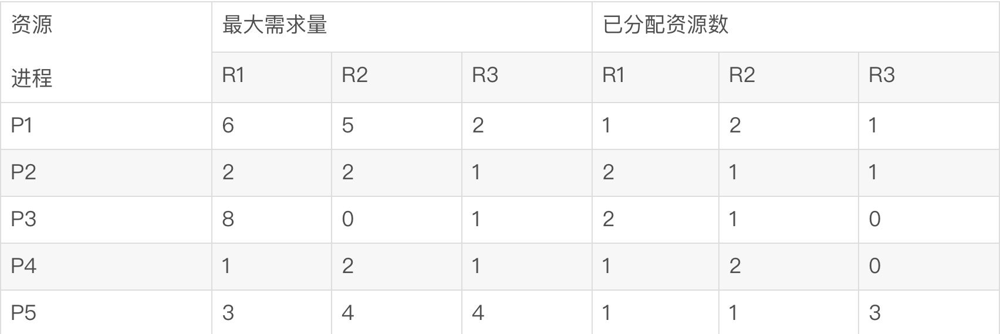
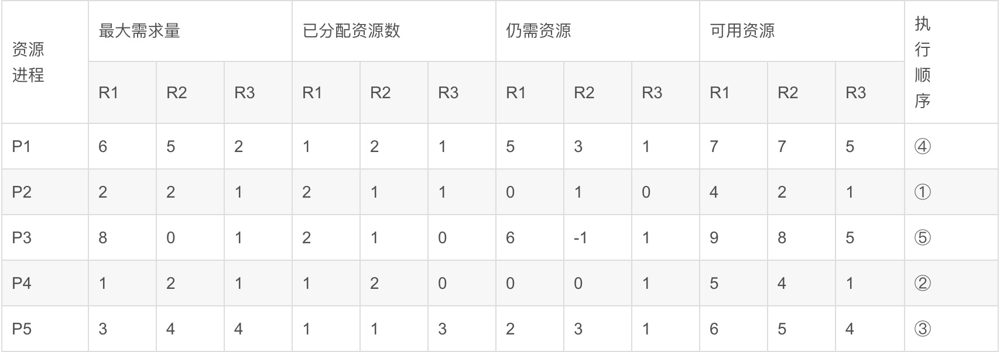

记录操作系统中知识点
@toc
考点
- 进程
- 进程的基本概念以及状态变化
- 进程死锁
- 进程同步、复制，信号量，前趋图，PV原语
- 存储
- 其他细节
进程

- 就绪状态：进程已得到运行所需资源，只等待CPU的调度便可运行；
- 运行状态：进程已得到运行所需资源，并且得到了CPU的调度；
- 等待状态：不具备运行条件、等待时机的状态。另：等待状态也称阻塞状态；

- 挂起：把该进程从内存中搬到外存上。
- 激活：又叫唤醒或恢复，操作是一样的，只是叫法不一样而已，该操作是把外存上的某个进程弄到内存上。
为什么要引入挂起和激活操作呢？
用户的需要。用户调试一个程序的时候，运行该程序一多半了，但是，忽然发现该程序此时有Bug，用户想停下来修改，但是修改后，用户又不想从头开始运行该程序，此为一因。
操作系统的需要。操作系统管理着资源的分配，它无法忍受那些占着资源而不运行的程序，另外，这些进程也会妨碍系统的运行速度，此为一因。等等。
进程的死锁
进程管理师操作系统的核心，但如果设计不当，就会出现死锁的问题。如果一个进程在等待一个不可能发生的事，则进程就死锁了。而如果一个或多个进程产生死锁，就会造成系统死锁
例如：系统有3个进程：A、B、C。这三个进程都需要5个系统资源。如果系统有13个资源，则不可能发生死锁。
死锁发生的必要条件
- 互斥条件：即一个资源每次只能被一个进程使用，在操作系统中这是真实存在的情况。
- 保持和等待条件：有一个进程已经获得了一些资源，但因请求其他资源被阻塞时，对已获取的资源保持不放。
- 不剥夺条件：有些系统不可资源是不可剥夺的，当某个进程已获得这种资源后，系统不能强行收回，只能由进程使用完时自己释放。
- 环路等待条件：若干个进程形成环形链，每个都占用对方要申请的下一个资源。
解决死锁的策略
- 死锁预防：例如：要求用户申请资源时一起申请所需的全部资源，这就破坏了保持和等待条件；将资源分层，得到上一层资源后，才能够申请下一层资源，它破坏了环路等待条件。预防通常会降低系统的效率。
- 死锁避免：避免是指进程在每次申请资源时判断这些操作是否安全，典型算法是「银行家算法」。但这种算法会增加系统的开销。
- 死锁检测：
- 死锁解除
银行家算法
著名的银行家算法，最早是由Dijkstra提出来的。它是一种最有代表性的避免死锁的算法。在避免死锁方法中允许进程动态地申请资源，但系资源分配之前，应先计算此次分配资源的安全性，若分配不会导致系统进入不安全状态，则分配，否则等待。
银行家算法最重要的就是判断是可用资源和仍需资源之间的关系，如果可用资源数大于人需资源数，那么我们认为这个进程就是可以执行的，也是安全的，反之，便是不安全的。所以重中之重的是找到各种资源数。
对进程的判断遵循以下步骤:
- 计算系统开始时所有的资源数,即开始的可用资源数;
- 在仍需资源数和可用资源数中作比较,找到符合条件的进程,最后修改进程执行完毕时系统的可用资源数;
- 继续比较剩余进程和可用资源数,找到下边可以执行的进程;
- 依次类推;
【例】假设系统中有3类互斥资源R1、R2、R3，可用资源分别是9、8、5,。在T0时刻系统中有P1、P2、P3、P4和P5五个进程，这些进程对资源的最大需求量和已分配资源数如下表所示，则进程如何执行是安全的。

这里需要强调的是，无论题目中给出何种条件，我们只要找到以下信息便可从容应对各种变化：

【注】：
可用资源：表示相应的进程执行完毕（即释放该进程占用的资源）以后可用的资源，满足公式可用资源=可用资源+已分配资源，（因为已分配的资源将会在进程执行完毕以后释放，所以可用资源会不断增多，进程执行完毕便会全部释放）同时它也是下一个进程执行时可用的资源。
**需要说明的是根据进程执行情况的不同，每次填入表格中的可用资源也不会相同（因为每个进程分配的资源是有差异的），那么执行顺序也会有所差异，合理即可。
仍需资源：仍需资源数=最大需求量-已分配资源数，据此公式可以求得R1、R2、R3在不同的进程时仍需的资源数，如上表中所示。
按照之前所讲的步骤，实现如下：
1 | R1已分配的总资源数为1+2+2+1+1=7 |
开始有的资源数R1 R2R3分别为2、1、0,所以从仍需资源中查找(需要说明的是查找的时候以最少资源数作为限定条件能够较快地找出结果),只有P2进程符合条件,此时可用资源变为4、2、1；
接下来在在其余的进程中查找符合条件的进程,只能执行P4,此时可用资源变为5、4、1,以此类推,按照以上的步骤即可找到所有进程执行的顺序P2->P4->P5->P1->P3；
以上便是有关银行家算法的计算过程。
前趋图
前趋图（Precedence Graph）是一个有向无循环图，记为DAG（Directed Acyclic Graph），用于描述进程之间执行的前后关系。途中的每个节点可用于描述一个程序段或进城，乃至一条语句；节点间的有向边则用于表示两个节点之间存在的偏序（Partial Order）或前驱关系（Precedence Relation）「→」
如果